我们知道，任务有3种模式，新建、合并和覆盖。新建和覆盖都很好理解，新建是文件不存在时执行任务会生成新的文件，覆盖是文件已经存在了，重新生成替换掉之前的内容。而合并，则是需要遵循一定的规则。
合并目前分成2类，一类是文件的合并，另一类是Java的合并，Java是文件的特例。
任何文本类型的文件，都可以通过简单的2种方式运行合并操作：
合并演示：
模版中： insert_start id="..." <insert id="..."> ..(2).. 或者 ..(2).. insert_end </insert> 文件合并位置同样id的部分： //insert_start id="..." ..(1).. //insert_end 合并后： //insert_start id="..." ..(1).. ..(2).. //insert_end
不管是在模板还是Java或者各种类型的文件，都是以这2个符号作为识别标识的。 只不过在不同的文件中，我们可以使用一些注释符号，避免语法错误。
比如在Java中，我们可以用//或者//TODO。我们输入insert，可以出现提示
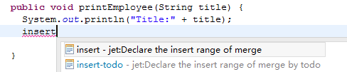
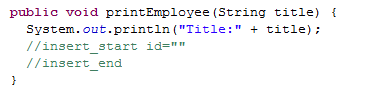
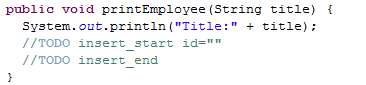
在其它文件中，比如xml或者html、jsp等，可以使用<!-- -->；输入insert，可以出现提示。
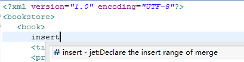
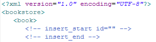
例子：在菜单栏中插入新的链接。
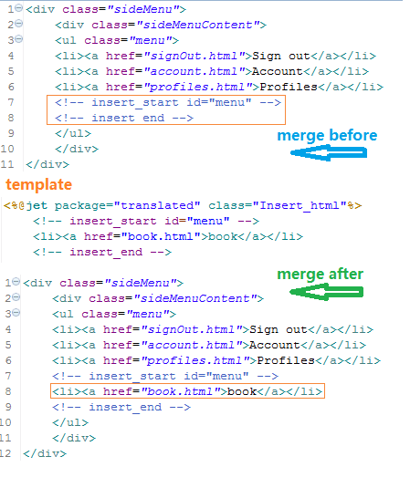
在模板中，除了用标记符外，还可以使用<insert>标签，效果一样。
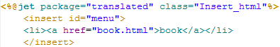
常用insert的地方如struts、spring配置文件注册bean、action，菜单栏注册新链接等。 实战用例请阅读：
合并演示：
模版中： update_start id="..." <update id="..."> ..(2).. 或者 ..(2).. update_end </update> 文件合并位置同样id的部分： //update_start id="..." ..(1).. //update_end 合并后： //update_start id="..." ..(2).. //update_end
不管是在模板还是Java或者各种类型的文件，都是以这2个符号作为识别标识的。 只不过在不同的文件中，我们可以加入一些符号，避免语法错误。
比如在Java中，我们可以用//或者//TODO。我们输入update，可以出现提示
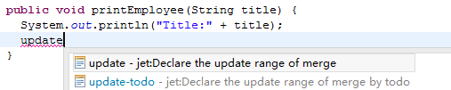
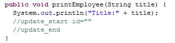
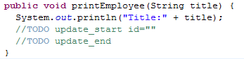
在其它文件中，比如xml或者html、jsp等，可以使用<!-- -->；输入insert，可以出现提示。
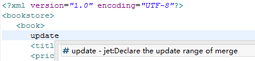
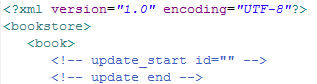
例子：在菜单栏中更新链接。
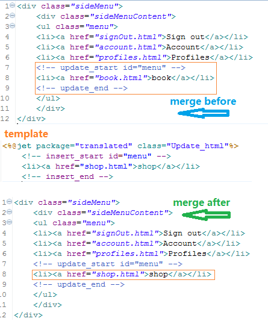
在模板中，除了用标记符外，还可以使用<update>标签，效果一样。
Java的合并是粗细粒度可以控制的系统，通过在多行注释中使用@tag。同时，方法体中也可以使用通用的insert、update合并，合并的标识有2种
@create：在模板中有的新属性（field）、新构造方法（constructor）、新方法（method）后，添加到Java类中。
@merge：在模版中被改变的类(class)、属性(field)、构造方法（constructor）、方法（method），同步更新到Java类中。
本章后续会用到的术语说明
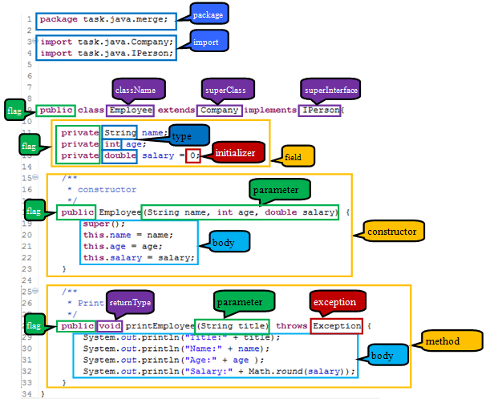
@create：默认的结构都会被添加，属性（field）、构造方法（constructor）、方法（method）都是默认结构；合并时都会被添加。
@create include{}：只有包含的结构才会添加。
@create exclude{}：与include相反，只有排除的结构才不会添加。
如何得到提示：
在类的多行注释中，输入@可以提示出来。
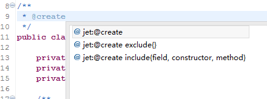
在@create include{}中按提示键可以提示出属性
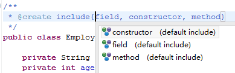
在@create exclude{}中按提示键可以提示出属性
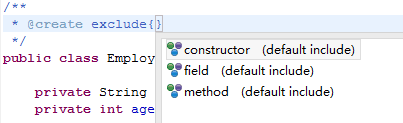
@create例子：可以看到所有结构都被添加。
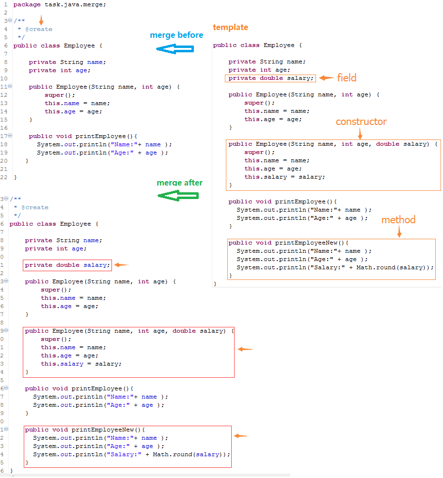
@create include{}例子：可以看到只有属性（field）被添加。
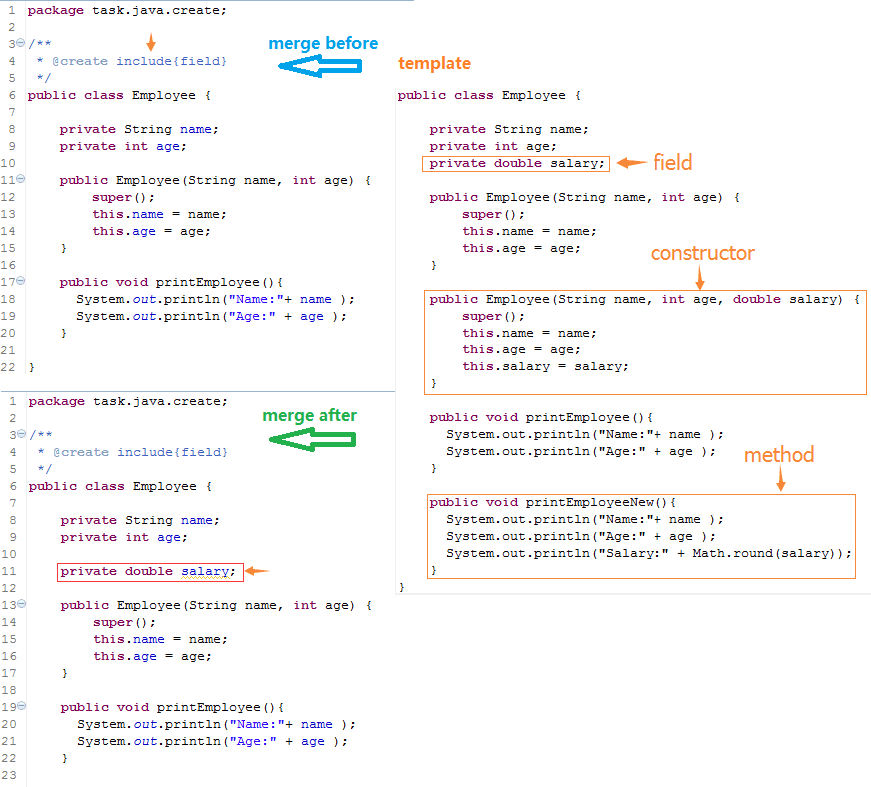
@create exclude{}例子：可以看到只有属性（field）没被添加。
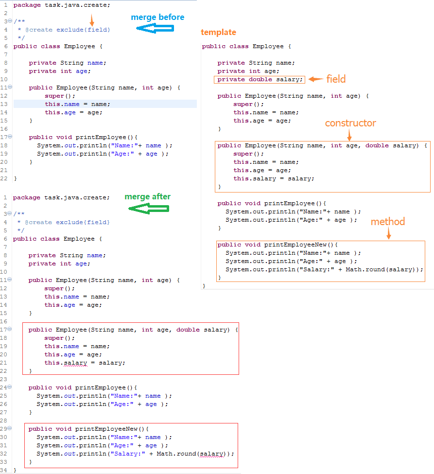
@merge：合并类、属性、构造方法、方法的结构。
@merge include{}：只有包含的结构才会合并。
@merge exclude{}：与include相反，只有排除的结构才不会合并。
类的合并结构：package、import、flag、className、superClass、superInterface。
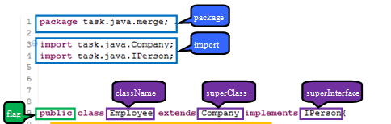
属性（field）的合并结构：flag, type, initializer。
构造方法（constructor）的合并结构：flag、parameter、exception、body。
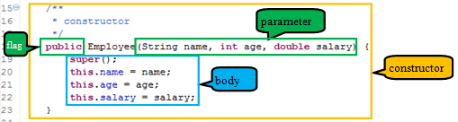
方法（method）的合并结构：flag、returnType、parameter、exception、body。
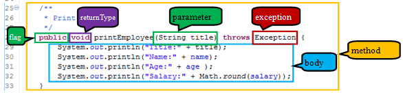
如何得到提示：
在类、属性、构造方法、方法的多行注释中，输入@可以提示出来。
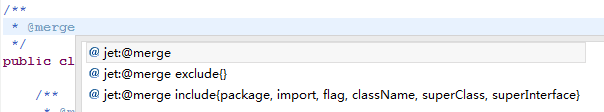
在@merge include{}中按提示键可以提示出属性，每个结构属性都不同。
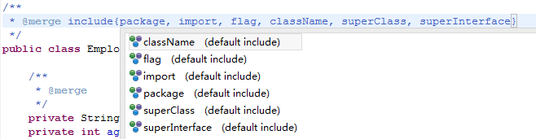
在@merge exclude{}中按提示键可以提示出属性，每个结构属性都不同
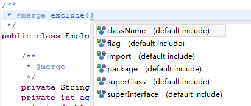
@merge例子：可以看到所有结构都被合并。
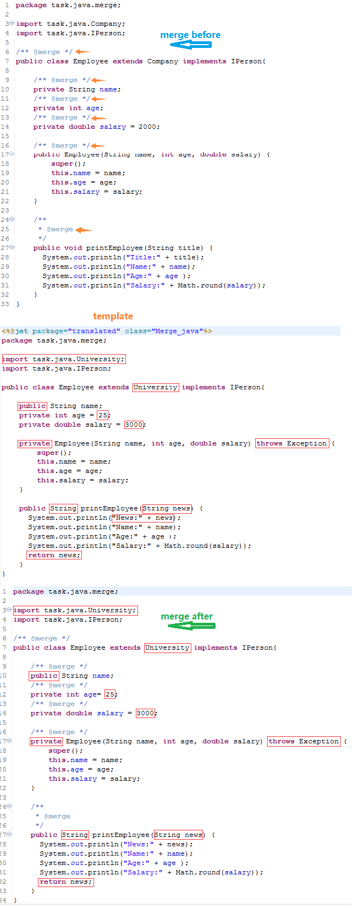
@merge include{}例子：可以看到模版中改了flag、parameter、exception、returnType、body，
但只有parameter、expection、body合并了，flag和exception没有变化。
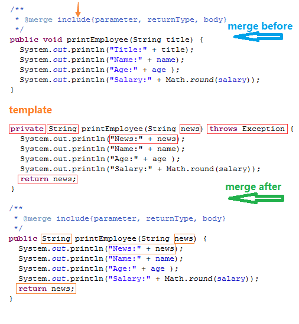
@merge exclude{}例子：可以看到模版中改了flag、parameter、exception、returnType、body，
但只有flag和exception合并了，parameter、expection、body没有变化。
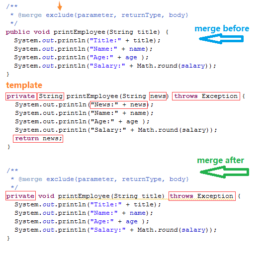
Java类和接口的合并除了使用@create和@merge外，构造方法和方法的方法体（body）中，还可以使用insert和update的方式。
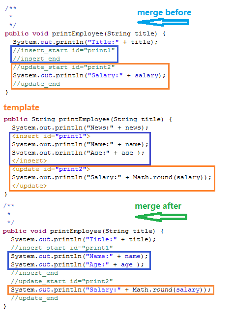
如果方法的注释中有@merge，原本会把方法体（body）全部合并，但是如果有insert、update的合并时，body的合并将会无效。
不过更好的建议是，如果既要使用@merge，又要在方法体中使用insert、update，最好写成@merge exclude{body}。